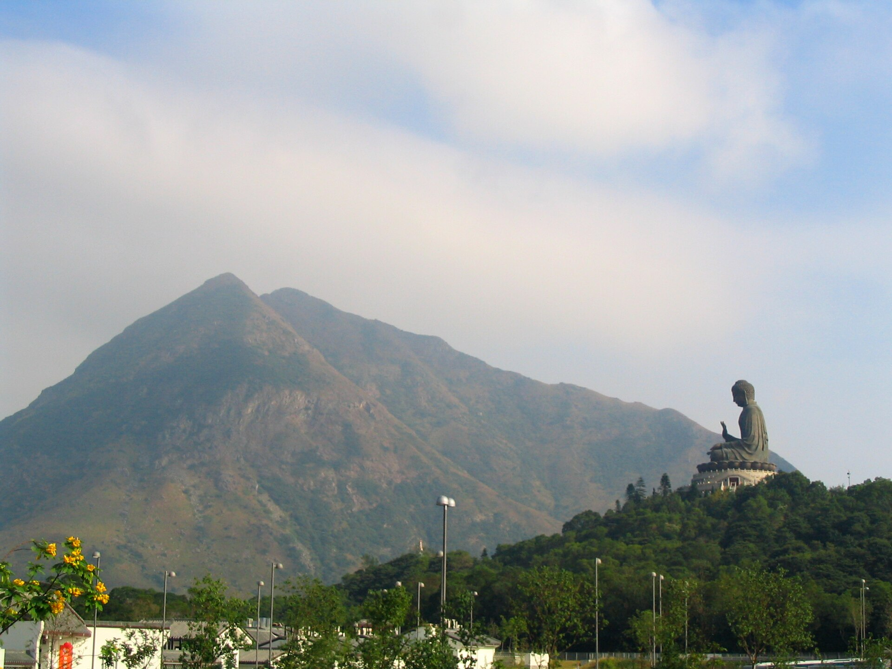
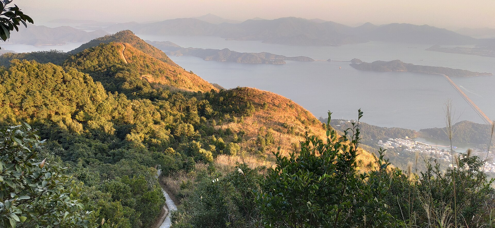

07 · Lantau Island · 大東山
Silvergrass and stone huts on the wind path.
Sunset Peak is Hong Kong's second-highest summit, but its character is less about conquest than atmosphere: open wind, autumn grass, stone huts, and slow western light.
Route essentials
Plan the walk 大東山
See on the mapMythic landscape reading
A quieter companion to Lantau Peak.
Sunset Peak (大東山) shares the Pak Kung Au saddle with Lantau Peak, but the two mountains feel different underfoot. Lantau Peak rises as a direct pilgrim ascent toward Ngong Ping; Sunset Peak opens into a broader plateau where the path, wind, and horizon do the work.
Its signature is the silvergrass season. In late autumn the slopes turn pale gold, catching low light and making the mountain feel more like a ritual landscape than a workout. The stone huts of Lantau Mountain Camp, known locally as 爛頭營, give the plateau a human trace without making it feel urban.
Read with feng shui language, the route is a wind path across the island's high spine. It gathers less drama than its neighbour, but more stillness: the kind of place where a visitor notices weather, direction, and time of day.
Walking the route
Four stages from Pak Kung Au to Mui Wo.
A measured climb, a plateau pause, and a long descent finishing near the south Lantau coast.
Stage 01 · about 30 min
Pak Kung Au start
Start from the same mountain saddle used for Lantau Peak, but turn toward Sunset Peak. The route quickly leaves the road and begins climbing through grass and stone steps.
Stage 02 · about 1 hour
South-east ridge ascent
The climb is steady rather than technical. As the trees thin, views open across south Lantau, Tung Chung, and the airport side of the island.
Stage 03 · about 45 min
Sunset Peak plateau
This is the route's anchor: silvergrass, exposed wind, and the line of stone huts. Move slowly here, especially if the light is changing.
Stage 04 · about 45 min
Mui Wo descent
The descent drops through woodland and old village fields toward Mui Wo. It is less exposed, but the steps are long enough to matter after sunset.
Practical notes
Before you set out.
Sunset Peak is popular for golden-hour photos, so the safest plan is the one that also respects the fragile plateau.
Related routes
Walks that read together with this one.
Sunset Peak's companion mountain across the saddle, and a New Territories ridge where named peaks carry the story.

04 · Lantau Island
Lantau Peak 鳳凰山
The companion ancestor mountain across Pak Kung Au: a direct pilgrim line above Po Lin Monastery.
View route See on the map
06 · New Territories Ridge
Pat Sin Leng 八仙嶺
A named ridge with eight summits, eight immortal names, and a stronger mythic sequence underfoot.
View route See on the map